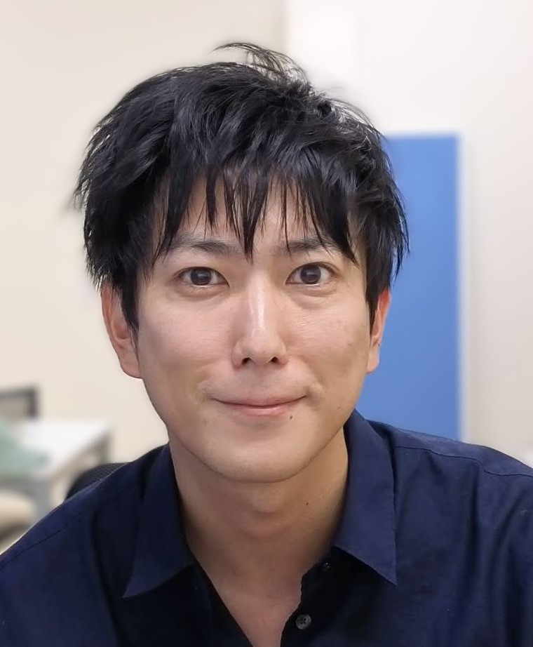
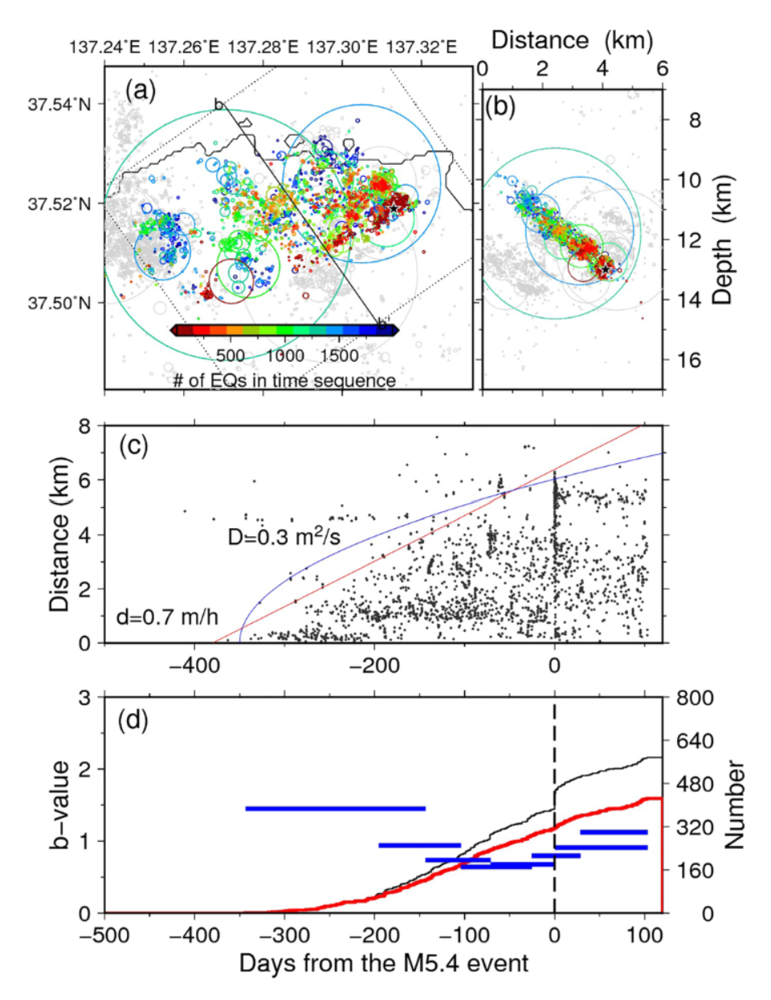
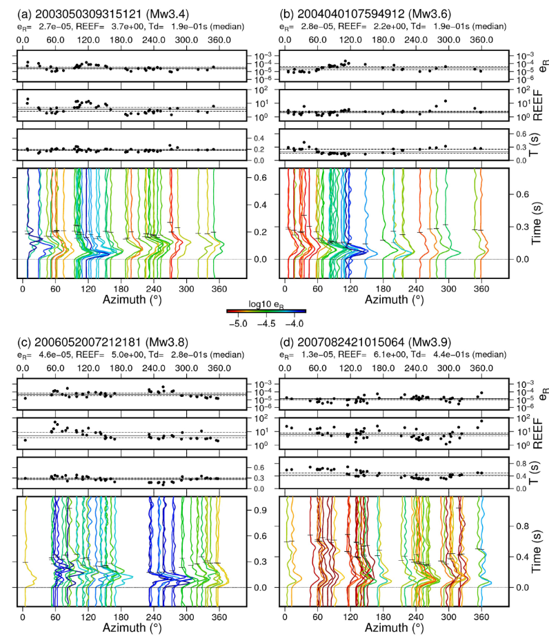
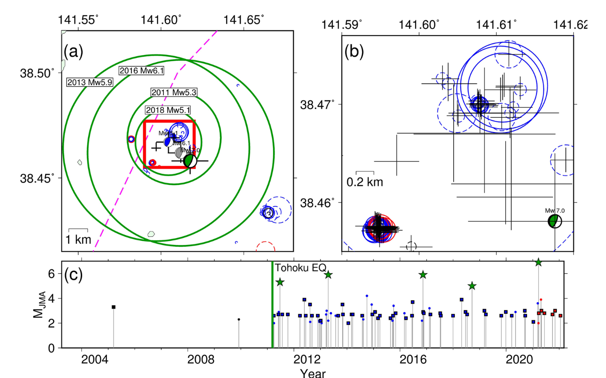
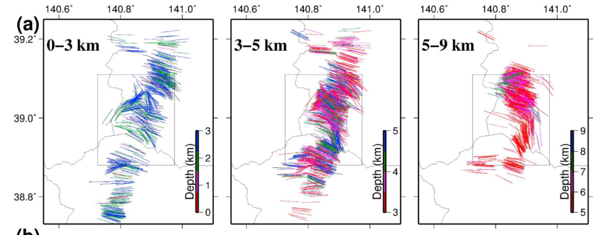

Keisuke Yoshida
Associate Professor · Graduate School of Science, Tohoku University
I study how and why earthquakes happen. Using observations, I connect the state of faults — stress, strength, fluids, and loading — to how seismicity behaves as a population, and to how individual earthquakes start, grow, and stop.
My work addresses two linked questions: where and when earthquakes occur, and how each rupture starts, grows, and stops.
Stress and fluids. Stress changes after large earthquakes constrain the strength of the crust (GRL 2012; JGR 2014). After the 2011 Tohoku-oki earthquake, inland swarms started where shear stress had decreased, isolating the effect of fluids weakening faults (JGR 2016, 2017, 2018). In the Noto Peninsula, updip fluid flow triggered the 2023 Mw 6.2 Suzu earthquake (GRL 2023).
Resolving ruptures. I resolve rupture patterns down to small earthquakes: asymmetric rupture is common (Geosci. Lett. 2019), a database of moment-rate functions for 1,736 earthquakes (GJI 2023), and diverse source complexity even at Mw 3.3–5.0 (SRL 2024).
Growth and arrest. Repeating earthquakes off Miyagi show that rupture patterns respond to loading rate, and that the size of the initial rupture decides whether it cascades (GRL 2025; JGR 2023). This frames my analyses of the 2025 Aomori-oki and Sanriku-oki sequences.
Open data. Relocated hypocenters, focal mechanisms, stress fields, rupture models, repeater catalogs, and moment-rate functions are on the data page.
Highlights
The 2025 Mw 7.6 Aomori-oki megathrust sequence and a slip-parallel seismic belt to the trench.
2026 · GRLEvolution of coupled seismic–aseismic slip during the 2025 Mw 6.8 Sanriku-oki sequence.
Guest editorEPS special issue on the 2025 Mw 7.6 off-Aomori earthquake — open until 31 Mar 2027.
Featured




Recent publications
- Yoshida, K., 2026, Evolution of Coupled Seismic-Aseismic Slip During the 2025 Mw 6.8 Sanriku-Oki, Japan, Megathrust Sequence, , 53, e2026GL121704, doi:10.1029/2026GL121704.
- Yoshida, K., M. Uno, D. Bassett, 2026, The 2025 Mw 7.6 Aomori-Oki Megathrust Sequence and a Slip-Parallel Seismic Belt to the Trench, , 53, e2026GL122361, doi:10.1029/2026GL122361.
Related datasets
- Yoshida, K., M. Uno, L. Yamaya, R. Sasajima, R. Burgmann, 2026, Focal mechanism catalog supporting “Mechanical Decoupling Across the Deep Megathrust Boundary”, , doi:10.5281/zenodo.23175616.
- Yoshida, K., T. Nishimura, R. Hino, Y. Ohta, N. Uchida, 2026, Data for “The 1994 Mw 7.8 Sanriku-Haruka-Oki Earthquake and Complex Recurrence on a Weakly Segmented Megathrust”, , doi:10.5281/zenodo.23004071.
- Yoshida, K., M. Uno, D. Bassett, 2026, Data for the 2025 Mw 7.6 Aomori-Oki Earthquake Sequence: Relocated Hypocenters and Rupture Models, , doi:10.5281/zenodo.19963531.
- Yoshida, K., 2026, Data for the 2025 Mw 6.8 and Mw 6.4 Sanriku-Oki Earthquakes: Relocated Hypocenters, Rupture Models, and Strainmeter Data, , doi:10.5281/zenodo.19383821.
Research interests
- Earthquake cycles — repetition, energy radiation, stress drop, rupture patterns (directivity, complexity, slip evolution), and source time functions across a wide magnitude range. papers
- Stress fields and earthquake occurrence — causes, absolute values, and evolution of stress fields during earthquake cycles. papers
- Fluid processes and earthquake occurrence — swarm activity and large earthquakes, fluid migration after the 2011 M9 Tohoku earthquake, and the 2024 Noto Peninsula earthquake. papers
- Earthquake generation processes in Japan — papers
Archive
Writings of Keiiti Aki — his unfinished autobiography, Seismic Prediction of Possibility, and related articles, entrusted to me by Prof. Yoshiaki Hisada (Kogakuin University).